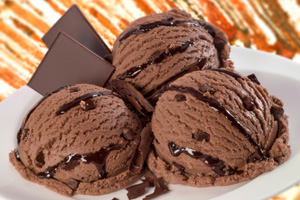

• Preheat the oven to 170 C / Gas 3. Grease six round 20cm cake tins and line with baking parchment. • For the cake, beat together the butter, sugar and vanilla until pale and creamy. Add the eggs one at a time, beating well after each addition. Gradually add the flour, mixing well until smooth. • Divide the milk in six bowls. Add one food colouring to each bowl and stir well. • Divide the cake mixture into six equal portions. Mix the cake mixture with the food colouring, using a a clean spoon. • Place the mixtures into the prepared cake tins and level the top. • Bake the cakes for 20 minutes, or till a skewer inserted in the centre comes out clean. • Once cakes are cool, use a sharp serrated knife to cut the tops off of the cakes so that each layer is of the same height. • For the icing, beat the butter for 5 minutes till light and fluffy. Add the icing sugar gradually, mixing well. Finally mix in the milk. • Spread a bit of icing on the bottom on a cake stand. Place the purple cake on top, then spread the top of the cake with icing. Continue in this order: blue,green, yellow, orange, red. • Spread the entire cake, top and sides, with a thin layer of buttercream. Place in the fridge or freezer for 30 minutes. • Remove cake from fridge and spread remaining icing over all sides of the cake. Decorate as desired, and serve!